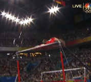
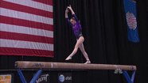

'Gymnasts perform complicated vaults in different body positions, such as tucked, piked or stretched. The best vaulters are explosive off the springboard, as well as when pushing off the table. Judges watch for proper body alignment, form, quick repulsion, the height and distance traveled, as well as the number of saltos and twists. Generally, the more saltos and twists, the higher the difficulty value of the vault. In addition, gymnasts should "stick" their landings by taking no extra steps. In qualifying and all-around finals, each gymnast performs one vault. In the team qualifying competition, any gymnast wishing to qualify to the individual event finals for vault must perform a second vault from another vault skills group. The score of the first vault counts toward the team score; the vaults are averaged for qualification to vault finals. In individual event vault finals, the gymnast must perform two vaults from different vault groups. An average is determined from the two scores. This event is difficult because the entire performance happens very quickly. The gymnast must stay intensely focused and be prepared for the ground when it is time to land. Speed, power and spatial awareness are essential to performing high-level vaults correctly.'
'Often a crowd favorite, the uneven bars demand excellent upper-body strength, split-second timing and an aggressive approach. The entire routine should flow from one movement to the next without pauses, extra swings or additional supports. The most daring parts of the routine are often in the high-flying release moves and dismounts. Release moves can go from low bar to high bar, from high bar to low bar, or from releasing one bar and regrasping the same bar. Many gymnasts also use pirouetting into release moves to earn a high difficulty value. Exact handstand positions are expected with large deductions for even minor deviations. This event is difficult because it requires courage and precision to be able to release and re-grasp the bars. Perfect form, straight body lines in the vertical position and a stuck landing are essential to performing well.'
'Just four inches wide, the balance beam challenges gymnasts because they must execute routines that give the impression that they are performing on the floor. The world's best seem to "attack" the beam and are very confident while demonstrating excellent height, flexibility and power. The beam routine may not exceed 90 seconds and must cover the entire length of the beam. Gymnasts must use acrobatic and dance movements to create high points or peaks in the exercise, consisting of two or more elements performed in a series. An example of an acrobatic series is a back handspring to a back salto. A gymnastics series might consist of a turn followed by a split jump. Gymnasts also complete several requirements other than the acrobatic and gymnastics series. For example, she must complete a turn of at least 360 degrees on one foot and she also must perform a leap or jump with 180 degrees forward split of the legs. If a gymnast does not successfully complete one of the several requirements, a deduction is taken. This event is difficult because it takes courage and concentration to perform difficult tumbling and dance skills on the thin beam. Gymnasts often dread the event because a fall off the apparatus means a 1.00 deduction.'
'The floor exercise gives gymnasts the chance to express their personalities through their music choice and choreography. Gymnasts often get energy from the crowd and they usually welcome audience participation in clapping to the beat. Throughout the routine, the gymnast must harmoniously blend dance elements and tumbling while making versatile use of floor space, changing both the direction and level of movement. The quality of grace may be disguised by movements of playful theatrics, but look for a dancer-like command of music, rhythm and space. The gymnastics elements should flow freely into each other while the leaps cover impressive distances and the pirouettes and turns add excitement to the routine. The floor routine is choreographed to music, lasting no more than 90 seconds and covering the entire floor area. There are several special requirements, such as leaps and turns, and the trend is to have four tumbling passes. This event is difficult because it requires beauty, strength, power and stamina to continue at peak performance throughout the entire exercise. While the routine is no more than 90 seconds, athletes must maintain energy and excellence, which can be challenging because of the demanding content in the exercise.' See Aly Raisman's floor routine from the Olympic Trials in July 2016.